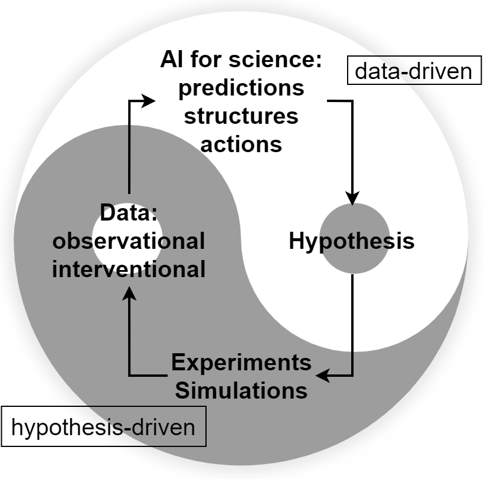
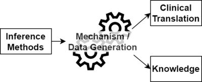

🔥💀 WELCOME TO THE UGLIEST SITE EVER 💀🔥
I am Haoqi Sun (/'how-chee/), a researcher in Neurology Department, Beth Israel Deaconess Medical Center (BIDMC) and Harvard Medical School (HMS), part of Clinical Data Animation Center directed by Professor M. Brandon Westover, MD. PhD. You can call me Hugo if you want.
Email: ude tod dravrah tod cmdib ta 3nush (ti esrever)
 https://orcid.org/0000-0002-5041-8312
https://orcid.org/0000-0002-5041-8312
Motto: Apply first principle thinking: If you do AI, start from the equations; If you do biology, start from the mechanisms. Then repeatly use deduction, abduction, and induction.
Research Philosophy (How I think science works)

Inspired from Wang et al. Scientific discovery in the age of artificial intelligence.
Nature 620.7972 (2023): 47-60.
Link
There are many other examples of such iteration:
- In scientific method: induction --> abduction --> induction --> abduction ...
- In neuroscience: neural oscillation
- In sleep: NREM --> REM --> NREM --> REM ...
- In expectation maximization: E --> M --> E --> M ...
Research Framework

Use AI to assist research:
- Use AI to extract phenotypes that otherwise cannot be extracted
- Use AI to make decisions that otherwise cannot be done
- Use AI to propose new hypotheses in an optimal way
Research Areas
- Sleep Medicine
- Sleep-based biomarkers for brain health and aging
- The role of sleep in neurological diseases
- Causal Inference in Neuroscience and Neurology
- Causal effect estimation
- Mediation analysis to understand the affecting pathways
I am trained in AI stuff, brain stuff, Bayesian stuff, computational neuroscience, and bioinformatics.
Publications
All publications: Google Scholar
Selected papers:
- Sun, H., Sourina, O. and Huang, G.B., 2016. Learning polychronous neuronal groups using joint weight-delay spike-timing-dependent plasticity. Neural Computation, 28(10), pp.2181-2212.
- Sun, H., Paixao, L., Oliva, J.T., Goparaju, B., Carvalho, D.Z., van Leeuwen, K.G., Akeju, O., Thomas, R.J., Cash, S.S., Bianchi, M.T. and Westover, M.B., 2019. Brain age from the electroencephalogram of sleep. Neurobiology of aging, 74, pp.112-120.
- Hogan, J., Sun, H., Aboul Nour, H., Jing, J., Tabaeizadeh, M., Shoukat, M., Javed, F., Kassa, S., Edhi, M.M., Bordbar, E. and Gallagher, J., 2020. Burst suppression: causes and effects on mortality in critical illness. Neurocritical care, 33, pp.565-574.
- Sun, H., Ganglberger, W., Panneerselvam, E., Leone, M.J., Quadri, S.A., Goparaju, B., Tesh, R.A., Akeju, O., Thomas, R.J. and Westover, M.B., 2020. Sleep staging from electrocardiography and respiration with deep learning. Sleep, 43(7), p.zsz306.
- Sun, H., Ye, E., Paixao, L., Ganglberger, W., Chu, C.J., Zhang, C., Rosand, J., Mignot, E., Cash, S.S., Gozal, D. and Thomas, R.J., 2023. The Sleep and Wake Electroencephalogram over the Lifespan. Neurobiology of Aging, 124, pp.60-70.
Tools
Service
- Consultant, AI in Sleep Medicine Committee, American Academy of Sleep Medicine, 2020-2023
Grants